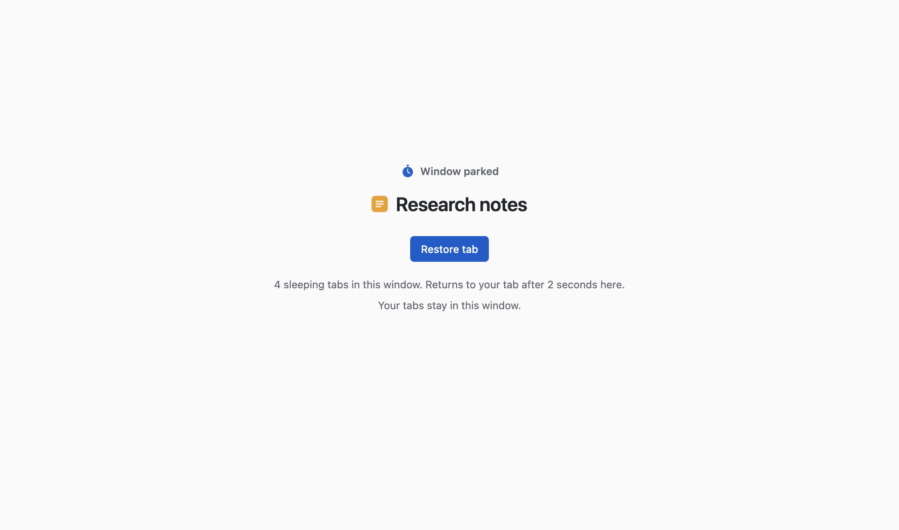

Research notesQuarterly plan: draftTeam calendarBudget 2026Parked · Research notes
Chrome Window Parker chrome-extension://…/parked.html
After a while away, a window switches to a small parking page, so Chrome can put its tabs to sleep. Come back and your tab returns.
